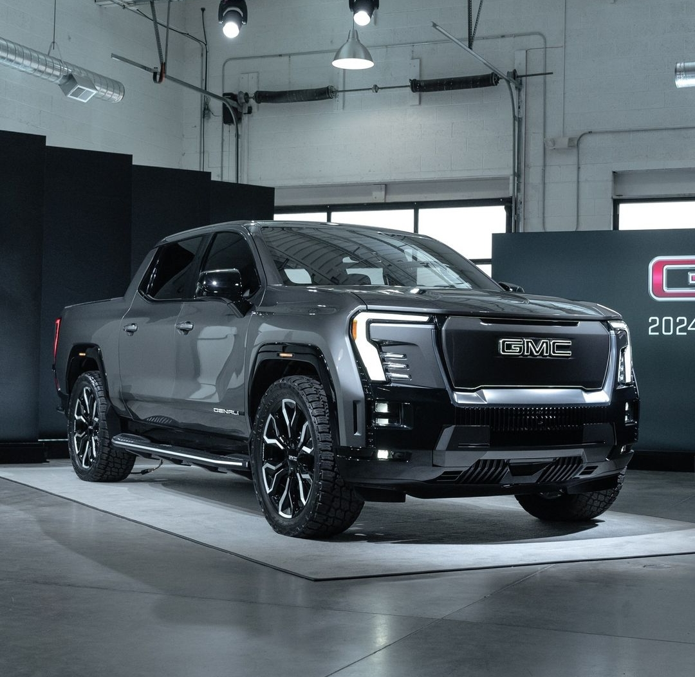
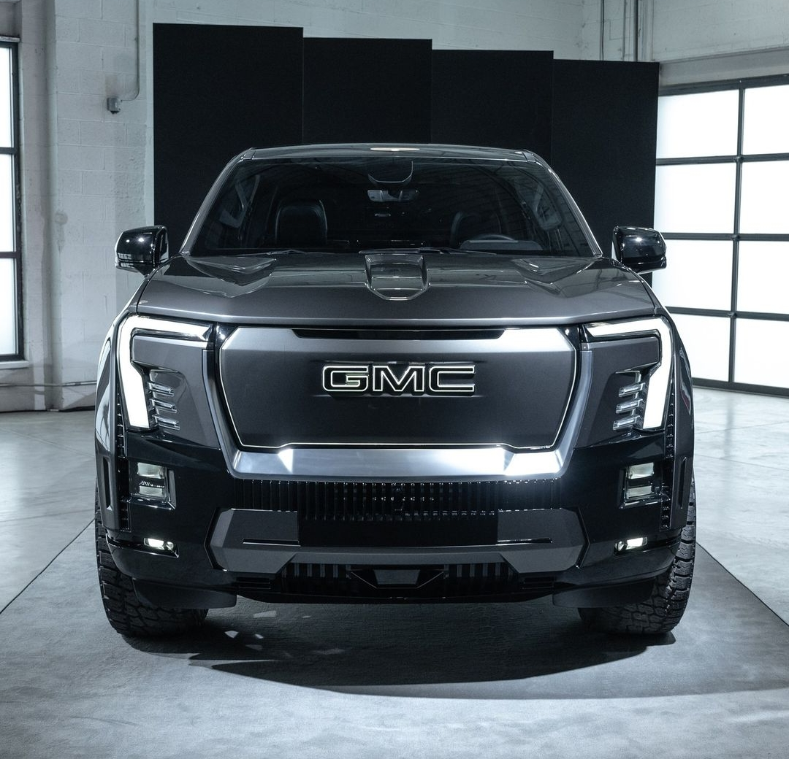
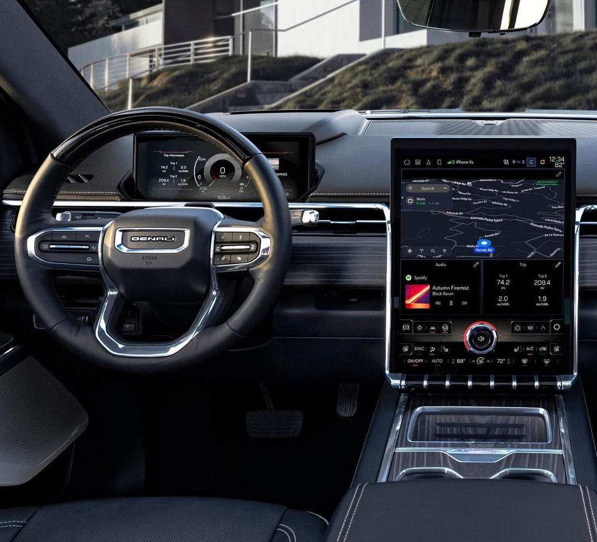
Se presentó la nueva GMC Sierra EV Denali Edition 1, que tiene un tren motriz de tracción total y dos motores eléctricos de 754 caballos de fuerza y 785 libras-pie de torque con 644km de alcance. Se ofrecerá solo con cabina doble. También cuenta con suspensión neumática que puede subir y bajar la camioneta, además de contar con la característica que le permite girar las ruedas traseras en la misma dirección que las delanteras para realizar mejores maniobras, al igual que la nueva Hummer EV. Cuenta con varios modos de conducción y posee el sistema de frenado regenerativo. Su capacidad máxima de remolque será de 4309kg.
El interior cuenta con un sistema de infoentretenimiento en una pantalla táctil de 16.8 pulgadas que seguramente cuente con Apple CarPlay y Android Auto. Viene con el avanzado sistema de conducción manos libres Super Cruise, que se hace cargo de la aceleración y el frenado y permite quitar las manos del volante en ciertas situaciones. Se cree que costará más de U$D100.000.
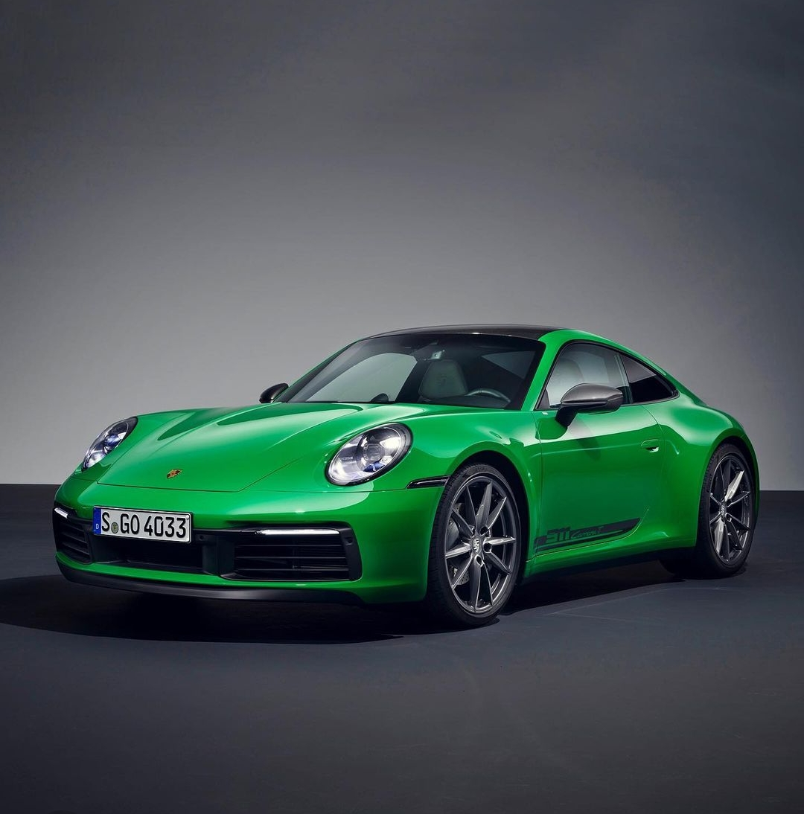
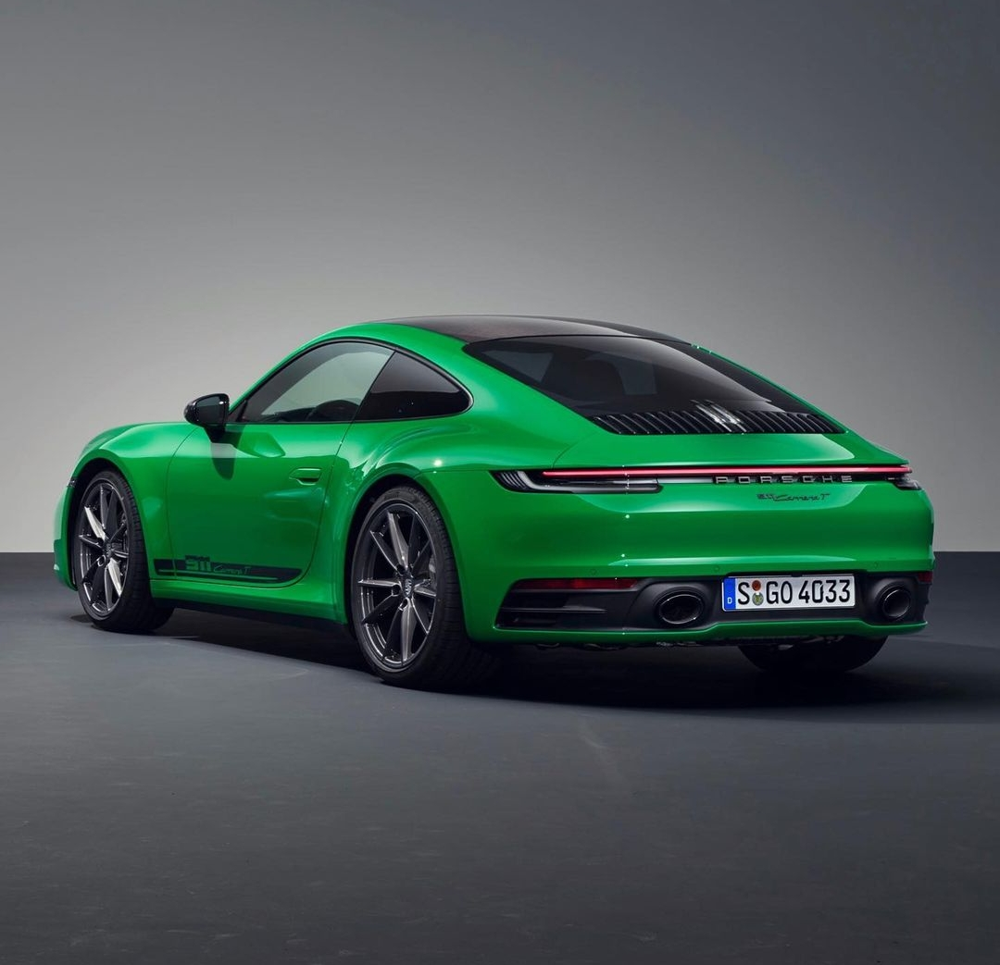

El nuevo Porsche 911 Carrera T se posiciona un peldaño por encima del Porche 911 Carrera y no es la primera vez que sale esta versión, ya que también salió con el 911 de primera generación y la generación 991, la anterior a la actual. Cuenta con el mismo motor bóxer biturbo de seis cilindros de la versión de acceso, con 385cv y un par máximo de 450Nm a las ruedas traseras, un 0 a 100 km/h en 4,5 segundos y una velocidad máxima de 291km/h.
Su diferencia está en su comportamiento gracias a las mejoras introducidas respecto al Carrera convencional. Además del cambio manual, viene de serie el Porsche Torque Vectoring, diferencial autobloqueante en el eje trasero, pack Sport Chrono y tren de rodaje deportivo PASM con una suspensión 10mm más baja. Sus llantas son de 20 pulgadas delante y 21 detrás. Incluye de serie el volante deportivo GT, el sistema de escape deportivo y los asientos deportivos Sport Plus, mientras que los asientos traseros se excluyen para ahorrar peso, aunque pueden pedirse opcionalmente. Pesa 1470kg, o sea, 35kg menos que el Carrera normal.
En el exterior cuenta con vinilos laterales y un kit aero opcional con paragolpes más deportivos, faldones aerodinámicos, un alerón trasero fijo, o también se puede elegir techo solar y cinturones en contraste, como también el eje trasero direccional.
Ya tiene un precio de partida de 143.314 euros, 12.111 euros más que el Carrera.
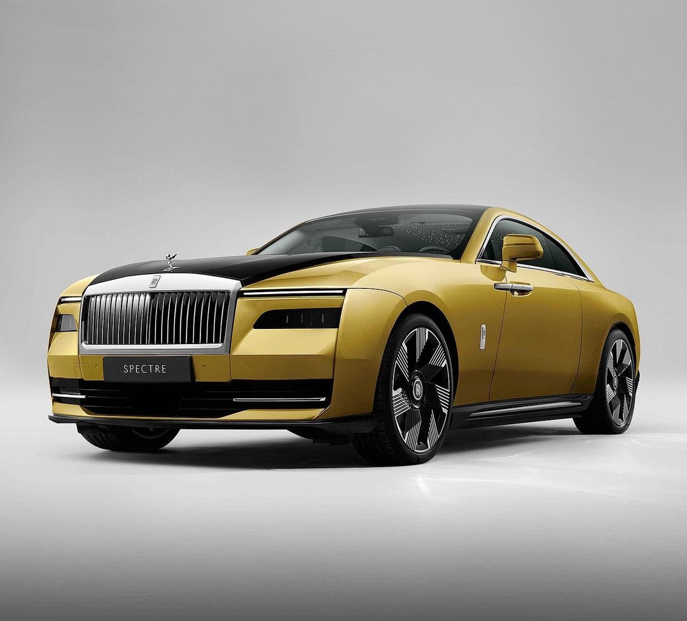
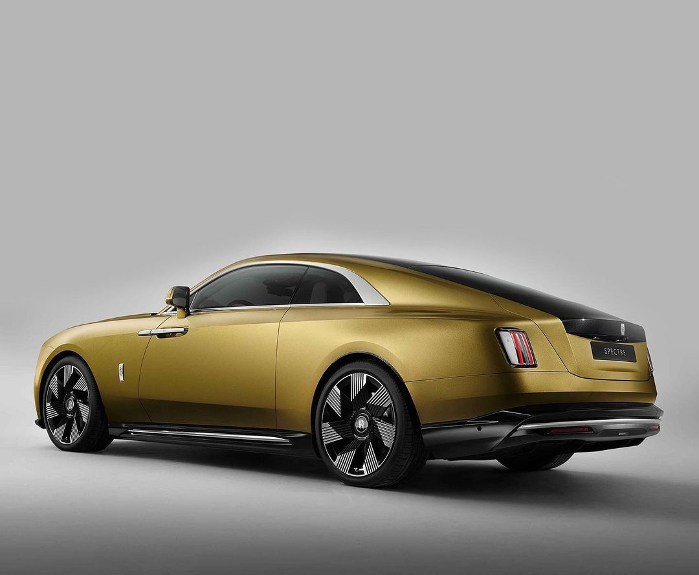
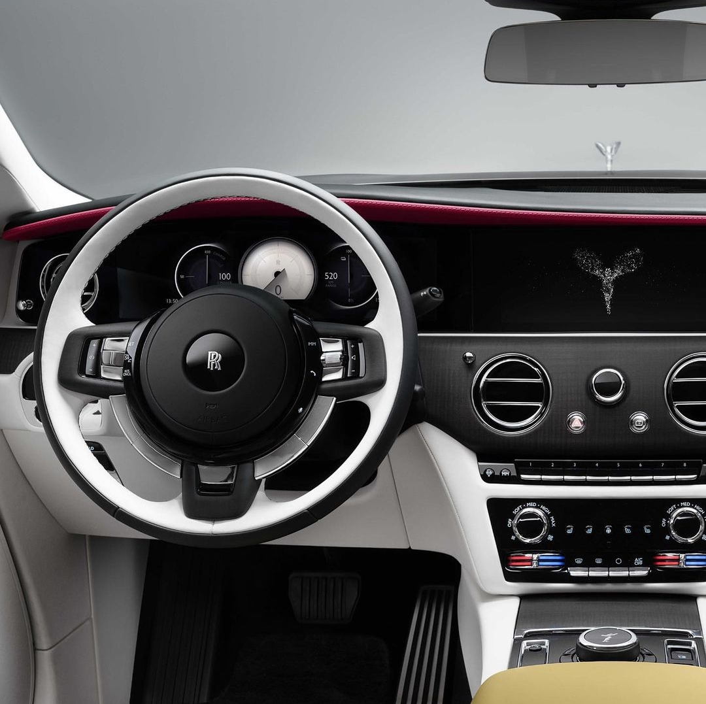
Se presentó el primer Rolls eléctrico, el Rolls Royce Spectre. Este coupé 100% eléctrico posee una mecánica heredada de la tecnología BMW y los BMW i. Además, es el Rolls Royce más aerodinámico jamás creado.
En su interior cuenta con el ya conocido techo Starlight con 4796 luces que simulan estrellas, puertas suicidas con madera Canadel Panelling o un panel con la insignia de Spectre acompañada de 5500 estrellas en la zona del copiloto en el salpicadero.
El chasis es de aluminio y gracias a la integración de la batería es 30% más rígido que cualquier otro Rolls Royce.
LLega a una potencia máxima de 584cv con 900Nm de par y una autonomía de 520km, haciendo el 0 a 100km/h en 4,5 segundos.
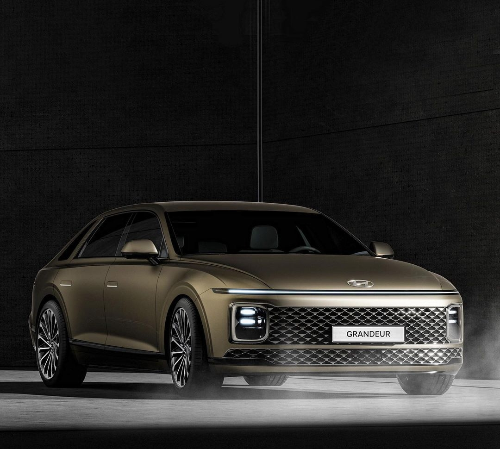
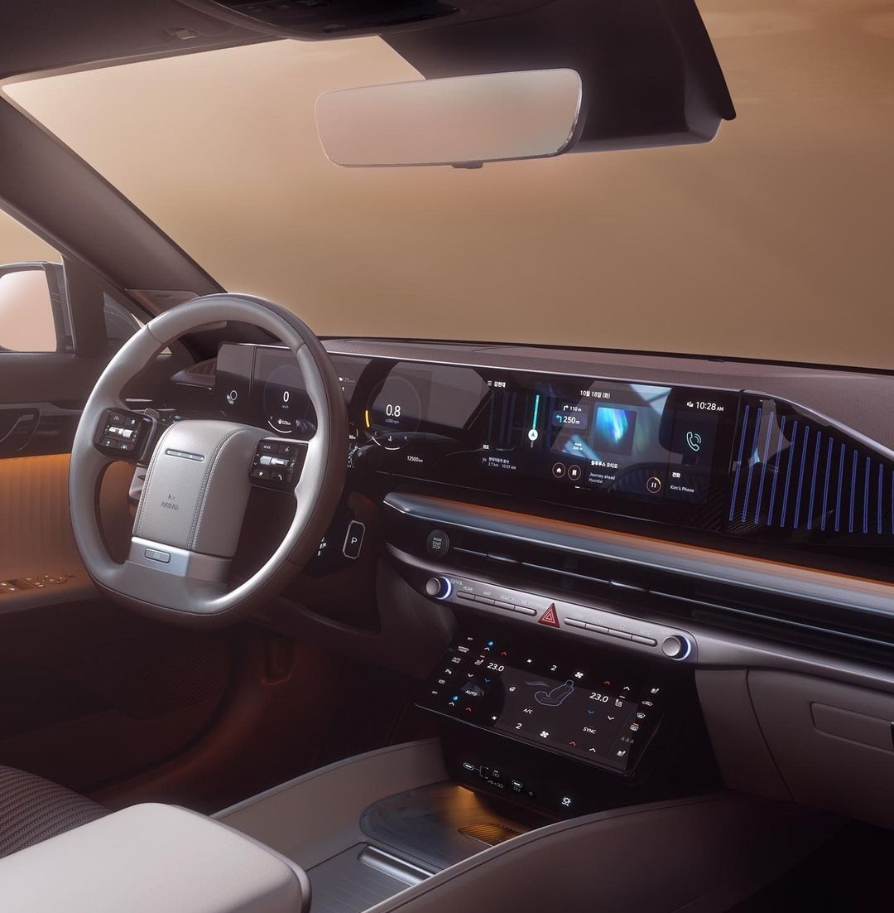
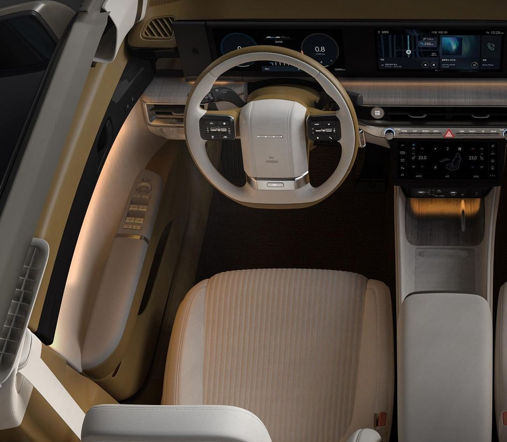
Se presentó la séptima generación del Hyundai Grandeur, lleno de lujo, tecnología y confort. Su diseño mantiene las líneas clásicas del modelo pero con el actual lenguaje de diseño de Hyundai. El amplio y lujoso interior cuenta con materiales de primera calidad como madera real, aluminio, cuero napa ecoprocesado, así como también tratamiento higiénico y antibacteriano en distintas superficies de contacto.
Hyundai todavía no reveló nada sobre su mecánica y precio.